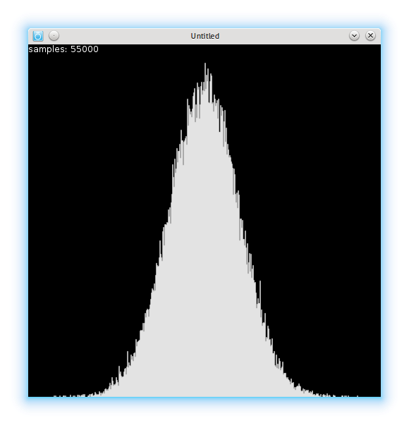

Getting different distributions out of uniform distribution
December 19, 2012 - Tagged as: lua, en.
I don’t know much about statistics and distributions, but I needed some differently distributed pseudo-random numbers for a project I’m working on.
I think most programming languages have a pseudo-random number generator, and that generators probably generate uniformly-distributed pseudo-randoms. I’m using Lua and Lua’s math.random generates pretty much uniformly distributed numbers:

It’s written in Lua’s manual(link is given above) that it’s statistical properties cannot be guaranteed. It still works fine for my purposes as a uniformly distributed number generator.
If you’re working with Processing or some other visualization libraries, you probably also have uniformly-distributed generator1 in stdlib. But if you’re like me, you have to hack yourself one. I found a method called Box-Muller transform that generates normally-distributed numbers out of uniformly-distributed ones.
I also read some discussions on why one shouldn’t use that, and instead move to other methods like Ziggurat algorithm(and some other I can’t remember now), but I think Box-Muller method is easy to implement and works fine for my purposes, so I’m using it now:
function box_muller()
return math.sqrt(-2 * math.log(math.random())) * math.cos(2 * math.pi * math.random()) / 2
endThis function returns numbers in range [-1,1]. I’m using it with some code like that:
local dev = 100
local rand = box_muller()
return math.floor(rand * dev + myLimit/2)Here the variable dev stands for standard deviation, though note that it’s value is not standard deviation, but just a value to play with to set standard deviation. I don’t know how can I set standard deviation with Box-Muller method. By playing this value you can get distributions with different standard deviations.

I also generated two custom distributions, I don’t know if people gave them any special names, first one is this:
I think this is a very useful one, this means that if I give some actions in my game different numbers depending on their priority and use this random number generator, I get numbers of actions with more priority more than the ones with less priority. Here’s the code:
function ()
while true do
local r1 = math.random(range)
local r2 = math.random(range)
if (r2 < r1) then
return r1
end
end
endLast one is similar:

function ()
local rate = 3
local r = math.random(500^rate)
print(r)
return math.floor(r^(1/rate))
endIn this code, if you make rate variable 2, you get pretty much same distribution with the last one above. In my case, for some reason, making it 4 gives a value that doesn’t fit into 32bit, and so math.random call fails. When I tried with Lua 5.2 compiled by myself on my 64bit machine, math.random works fine with 64bit values, so I think it’s a problem with the app I’m using2.
and you may even have a Perlin noise generator too!↩︎
For those interested: It’s Love2d. Recently(while working on this code) I realized that Love2d is not a Lua library, but a complete C++ program that has Lua interpreter. In most cases you can’t see the difference but there are some edge cases like I mentioned above that makes your program runs fine with Lua, but fails with Love2d programs.↩︎